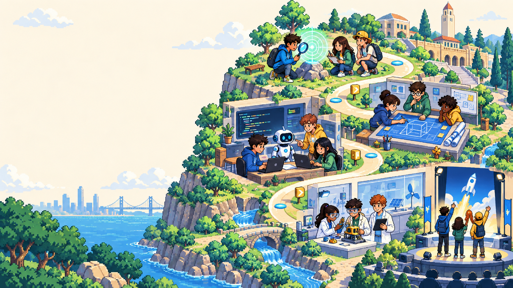
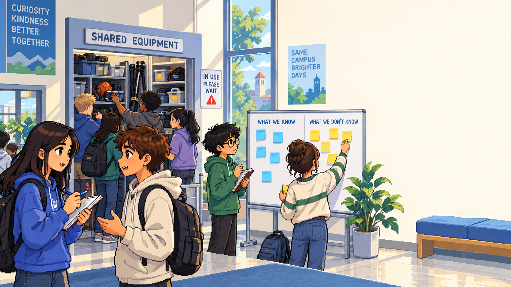
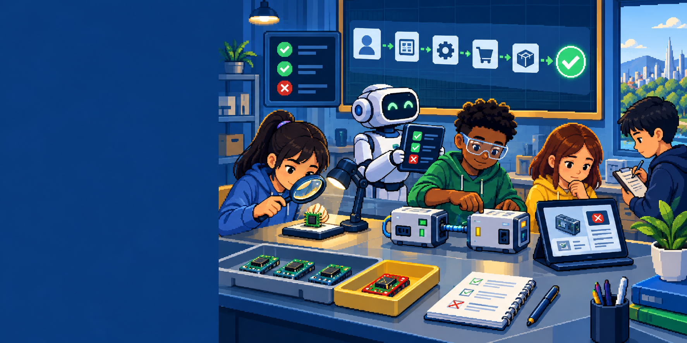

软件产品开发
先立棍，再让 AI 跑
把真实需求写成可执行、可验证、可纠偏的开发任务
一句话，AI 能直接开工吗？
学生、设备管理员，还是值班老师？
能点按钮，还是预约真的被保存且不冲突？
不能重复占用，不能“假成功”，不能乱收隐私。
AI 很快，但方向错了会发生什么？
十分钟生成了漂亮页面，不代表用户拿到了可靠结果
两位同学同时提交，同一台设备被占了两次。
屏幕说“预约成功”，服务器却没有保存记录。
预约设备却要求家庭住址和家长手机号。
开发的真正工作
用户结果
谁遇到什么麻烦，解决后发生什么变化
业务规则
用户如何完成任务，边界和异常是什么
系统协作
对象、模块、数据和接口怎样配合
验证证据
用什么测试证明产品真的符合约定
一个小需求，会越拆越多
分支、状态、依赖和例外不断增加；人的注意力却不会一起变多
“立棍”不是任务清单，而是控制系统
可执行、可验证、可控制的多层标准
一根完整的棍，要写清 6 件事
当前情况
谁、在哪、发生了什么；哪些已知，哪些未知。
执行者
人和 AI 各扮演什么角色，分别能决定什么。
目标
要让用户完成什么任务，得到什么结果。
验收标准
出现哪些可观察证据，才算真的完成。
约束
时间、资源、技术和场景边界是什么。
禁止事项
不能双约、不能假成功、不能收无关隐私。
主棍、子棍、微棍：越往下越具体
每一层都要带验收标准；拆得越深，也必须对齐上一级
一级主棍
让学生能够公平地查看空闲时段、完成预约并获得可信结果。
方向与红线
二级子棍
查看时段、创建预约、冲突判断、取消预约；每根都写验收。
人来验
三级微棍
表单校验、冲突函数、数据库约束、失败测试与局部返工。
自测返工
复杂度向下沉，重要信号向上浮
交给下层吸收
必须向上报告
把任务交给 AI，不等于交出控制权
人保留判断
- 方向与用户价值
- 边界与红线
- 验收与纠偏
- 最终责任
AI 吸收执行
- 拆解与实现
- 生成候选方案
- 自测与返工
- 上报异常

主棍必须站在证据上
先理解真实麻烦，再决定要做什么
用 Story 把用户价值立成主棍
学生到器材室才发现设备被占用。
预约被保存；我的预约中可见；管理员名单一致。
同设备同时间不能重复预约；不得显示虚假成功。
端到端主干：主棍的开发载体
它让一条用户路径可运行、可演示、可测试；但还不能替代分层验收、反馈和纠偏
横向堆很多
每一块都“做了不少”，用户却无法完成一次任务
纵向跑一条
只做必要内容，先闭环一个真实用户任务
UI
规则
数据
每一层都是一根可验收的子棍
不要从“先画几个页面”直接跳到实现；中间的对象、规则和边界不能消失
用户目标
学生公平预约设备，减少白跑。
主要路径
查看时段 → 预约 → 得到可信确认。
领域模型
学生、设备、时段、预约、冲突规则。
系统架构
服务、数据、接口和一致性边界。
视图与 UI
空闲状态、预约操作和异常提示。

测试把“做完了”变成证据
每一层先写清失败和通过，再让 AI 实现
方法、精力和角色，都围绕同一根主棍
团队共同责任
- 产品 / UI：用户价值、范围、信息与操作是否清楚
- 架构 / 开发：对象、边界、实现和数据是否对齐
- 测试 / 运维：证据是否充分，异常能否恢复
- AI 助手：拆解、执行、自测、反馈；不替人担责
现在，为你们的项目立一根棍
团队共同填写，不急着写代码
交付一张开发立棍卡
完成后交换检查：
方向清楚吗？标准能验吗？
失败时知道向谁报告吗？
六问通过，才让 AI 全速开跑
回看任何一层，都能找到它对齐的上级目标和完成证据
不是只展示技术。
知道服务谁、完成什么。
知道哪些绝不能做。
有测试和可观察结果。
子棍没有另起方向。
异常可见，也能纠偏。